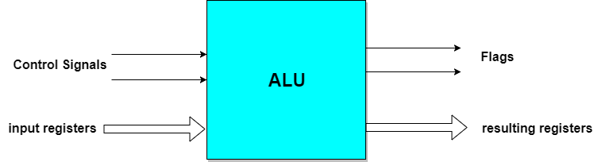
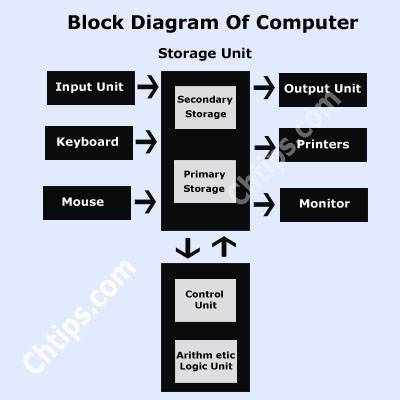
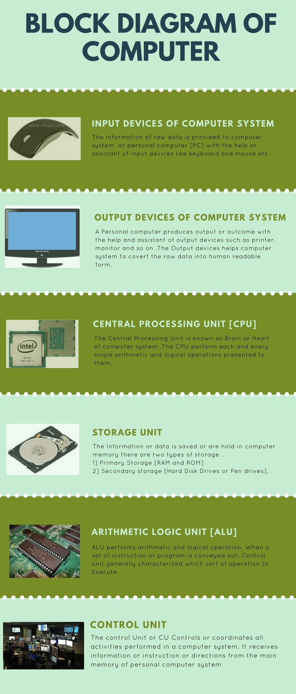
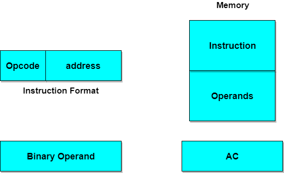
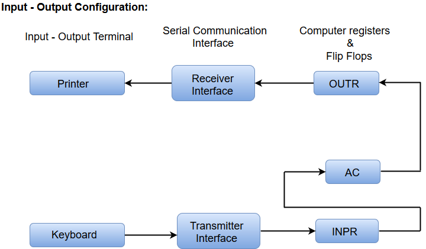
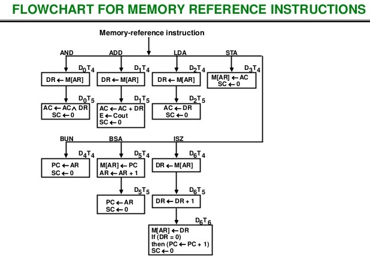

Register Transfer & Microoperations
Register transfer language and operations
Registers in Computer Architecture
Register is a very fast computer memory, used to store data/instruction in-execution.
A Register is a group of flip-flops with each flip-flop capable of storing one bit of information. An n-bit register has a group of n flip-flops and is capable of storing binary information of n-bits.
A register consists of a group of flip-flops and gates. The flip-flops hold the binary information and gates control when and how new information is transferred into a register. Various types of registers are available commercially. The simplest register is one that consists of only flip-flops with no external gates.
These days registers are also implemented as a register file.
Loading the Registers
The transfer of new information into a register is referred to as loading the register. If all the bits of register are loaded simultaneously with a common clock pulse than the loading is said to be done in parallel.
Register Transfer Language
The symbolic notation used to describe the micro-operation transfers amongst registers is called Register transfer language.
The term register transfer means the availability of hardware logic circuits that can perform a stated micro-operation and transfer the result of the operation to the same or another register.
The word language is borrowed from programmers who apply this term to programming languages. This programming language is a procedure for writing symbols to specify a given computational process.
Following are some commonly used registers:
- Accumulator: This is the most common register, used to store data taken out from the memory.
- General Purpose Registers: This is used to store data intermediate results during program execution. It can be accessed via assembly programming.
- Special Purpose Registers: Users do not access these registers. These registers are for Computer system,
- MAR: Memory Address Register are those registers that holds the address for memory unit.
- MBR: Memory Buffer Register stores instruction and data received from the memory and sent from the memory.
- PC: Program Counter points to the next instruction to be executed.
- IR: Instruction Register holds the instruction to be executed.
Register Transfer
Information transferred from one register to another is designated in symbolic form by means of replacement operator.
R2 ← R1
It denotes the transfer of the data from register R1 into R2.
Normally we want the transfer to occur only in predetermined control condition. This can be shown by following if-then statement: if (P=1) then (R2 ← R1)
Here P is a control signal generated in the control section.
Control Function
A control function is a Boolean variable that is equal to 1 or 0. The control function is shown as:
P: R2 ← R1
The control condition is terminated with a colon. It shows that transfer operation can be executed only if P=1.
Micro-Operations
The operations executed on data stored in registers are called micro-operations. A micro-operation is an elementary operation performed on the information stored in one or more registers.
Example: Shift, count, clear and load.
Types of Micro-Operations
The micro-operations in digital computers are of 4 types:
- Register transfer micro-operations transfer binary information from one register to another.
- Arithmetic micro-operations perform arithmetic operations on numeric data stored in registers.
- Logic micro-operations perform bit manipulation operation on non-numeric data stored in registers.
- Shift micro-operations perform shift micro-operations performed on data.
Arithmetic Microoperations
Arithmetic Micro-operations
In general, the Arithmetic Micro-operations deals with the operations performed on numeric data stored in the registers.
The basic Arithmetic Micro-operations are classified in the following categories:
- Addition
- Subtraction
- Increment
- Decrement
- Shift
Some additional Arithmetic Micro-operations are classified as:
- Add with carry
- Subtract with borrow
- Transfer/Load, etc.
The following table shows the symbolic representation of various Arithmetic Micro-operations.
| Symbolic Representation | Description |
|---|---|
| R3 ← R1 + R2 | The contents of R1 plus R2 are transferred to R3. |
| R3 ← R1 - R2 | The contents of R1 minus R2 are transferred to R3. |
| R2 ← R2' | Complement the contents of R2 (1's complement) |
| R2 ← R2' + 1 | 2's complement the contents of R2 (negate) |
| R3 ← R1 + R2' + 1 | R1 plus the 2's complement of R2 (subtraction) |
| R1 ← R1 + 1 | Increment the contents of R1 by one |
| R1 ← R1 - 1 | Decrement the contents of R1 by one |
Logic Microoperations
Logic Micro-Operations
These are binary micro-operations performed on the bits stored in the registers. These operations consider each bit separately and treat them as binary variables.
Some of logic micro operations are : AND, OR, X-OR.
Let us consider the X-OR micro-operation with the contents of two registers R1 and R2.
P: R1 ← R1 X-OR R2
In the above statement we have also included a Control Function.
Assume that each register has 3 bits. Let the content of R1 be 010 and R2 be 100. The X-OR micro-operation will be:

Shift Microoperations
Shift Micro-Operations
These are used for serial transfer of data. That means we can shift the contents of the register to the left or right. In the shift left operation the serial input transfers a bit to the right most position and in shift right operation the serial input transfers a bit to the left most position.
There are three types of shifts as follows:
a) Logical Shift
It transfers 0 through the serial input. The symbol "shl" is used for logical shift left and "shr" is used for logical shift right.
R1 ← she R1
R1 ← she R1
The register symbol must be same on both sides of arrows.
b) Circular Shift
This circulates or rotates the bits of register around the two ends without any loss of data or contents. In this, the serial output of the shift register is connected to its serial input. "cil" and "cir" is used for circular shift left and right respectively.
c) Arithmetic Shift
This shifts a signed binary number to left or right. An arithmetic shift left multiplies a signed binary number by 2 and shift left divides the number by 2. Arithmetic shift micro-operation leaves the sign bit unchanged because the signed number remains same when it is multiplied or divided by 2.
Arthmetic logic shift unit
Arithmetic Logical Unit
Instead of having individual registers performing the micro-operations, computer system provides a number of registers connected to a common unit called as Arithmetic Logical Unit (ALU). ALU is the main and one of the most important unit inisde CPU of computer. All the logical and mathematical operations of computer are performed here. The contents of specific register is placed in the in the input of ALU. ALU performs the given operation and then transfer it to the destination register.

Also,
To perform a microoperation, the contents of specified registers are placed in the inputs of the common ALU. The ALU performs an operation and the result of the operation is then transferred to a destination register. The ALU is a combinational circuit, so that the entire register transfer operation from the source registers through the ALU and into the destination register can be performed during one clock pulse period. The shift microoperations are often overall in a separate unit, but sometimes the shift unit is made part of the overall ALU.
Design of a complete basic computer and its working
The Computer system consists of mainly three types that are central processing unit (CPU),Input Devices, and Output Devices .The Central processing unit (CPU) again consists of ALU (Arithmetic Logic Unit) and Control Unit. The set of instruction is presented to the computer in the form of raw data which is entered through input devices such as keyboard or mouse.
Later this set of instruction is processed with the help of CPU, and the computer system Produce an Output with the help of Output Devices mainly Printers and monitors. Large amount of data is stored in the memory with the help of primary and secondary storage devices temporarily and permanently.This are called as storage devices
The CPU is the heart | Brian of a computer because without the necessary action taken by the CPU the user cannot get the desired output. The central Processing unit [CPU] is responsible for processing all the Instruction which is given to computer system or PC. Below Block Diagram of Computer and Its Components are mentioned For Better Understanding
 Block Diagram of Computer
The Basic components & parts of computer system are given below ::
- 1. Input Devices
- 2. Output Devices
- 3. CPU (Central Processing Unit)
- 4. Storage Unit
- 5. ALU(Arithmetic Logic Unit)
- 6. Control Unit
 Infographic on Block Diagram of Computer System
Basic Comp. Organization & Design
Instruction Codes and Computer Registers
Instruction Codes
While a Program, as we all know, is, A set of instructions that specify the operations, operands, and the sequence by which processing has to occur. An instruction code is a group of bits that tells the computer to perform a specific operation part.
Instruction Code: Operation Code
The operation code of an instruction is a group of bits that define operations such as add, subtract, multiply, shift and compliment. The number of bits required for the operation code depends upon the total number of operations available on the computer. The operation code must consist of at least n bits for a given 2^n operations. The operation part of an instruction code specifies the operation to be performed.
Instruction Code: Register Part
The operation must be performed on the data stored in registers. An instruction code therefore specifies not only operations to be performed but also the registers where the operands(data) will be found as well as the registers where the result has to be stored.
Stored Program Organisation
The simplest way to organize a computer is to have Processor Register and instruction code with two parts. The first part specifies the operation to be performed and second specifies an address. The memory address tells where the operand in memory will be found.
Instructions are stored in one section of memory and data in another.

Computers with a single processor register is known as Accumulator (AC). The operation is performed with the memory operand and the content of AC.
Common Bus System
The basic computer has 8 registers, a memory unit and a control unit. Paths must be provided to transfer data from one register to another. An efficient method for transferring data in a system is to use a Common Bus System. The output of registers and memory are connected to the common bus.
Load(LD)
The lines from the common bus are connected to the inputs of each register and data inputs of memory. The particular register whose LD input is enabled receives the data from the bus during the next clock pulse transition.
Before studying about instruction formats lets first study about the operand address parts.
When the 2nd part of an instruction code specifies the operand, the instruction is said to have immediate operand. And when the 2nd part of the instruction code specifies the address of an operand, the instruction is said to have a direct address. And in indirect address, the 2nd part of instruction code, specifies the address of a memory word in which the address of the operand is found.
Computer Instructions
Computer Instructions
The basic computer has three instruction code formats. The Operation code (opcode) part of the instruction contains 3 bits and remaining 13 bits depends upon the operation code encountered.
There are three types of formats:
1. Memory Reference Instruction
It uses 12 bits to specify the address and 1 bit to specify the addressing mode (I). I is equal to 0 for direct address and 1 for indirect address.
2. Register Reference Instruction
These instructions are recognized by the opcode 111 with a 0 in the left most bit of instruction. The other 12 bits specify the operation to be executed.
3. Input-Output Instruction
These instructions are recognized by the operation code 111 with a 1 in the left most bit of instruction. The remaining 12 bits are used to specify the input-output operation.
Format of Instruction
The format of an instruction is depicted in a rectangular box symbolizing the bits of an instruction. Basic fields of an instruction format are given below:
- An operation code field that specifies the operation to be performed.
- An address field that designates the memory address or register.
- A mode field that specifies the way the operand of effective address is determined.
Computers may have instructions of different lengths containing varying number of addresses. The number of address field in the instruction format depends upon the internal organization of its registers.
Instruction Cycle
Instruction Cycle
A program residing in the memory unit of a computer consists of a sequence of instructions. These instructions are executed by the processor by going through a cycle for each instruction.
In a basic computer, each instruction cycle consists of the following phases:
- Fetch instruction from memory.
- Decode the instruction.
- Read the effective address from memory.
- Execute the instruction.

Input-Output Configuration
In computer architecture, input-output devices act as an interface between the machine and the user.
Instructions and data stored in the memory must come from some input device. The results are displayed to the user through some output device.
The following block diagram shows the input-output configuration for a basic computer.
- The input-output terminals send and receive information.
- The amount of information transferred will always have eight bits of an alphanumeric code.
- The information generated through the keyboard is shifted into an input register 'INPR'.
- The information for the printer is stored in the output register 'OUTR'.
- Registers INPR and OUTR communicate with a communication interface serially and with the AC in parallel.
- The transmitter interface receives information from the keyboard and transmits it to INPR.
- The receiver interface receives information from OUTR and sends it to the printer serially.
Memory Reference instructions
Memory Reference instructions
This topic can be best explained from given flowchart.
Design of basic computer
aman choudhary
Design of Accumulator Logic
aman choudhary
Design of Control Unit
Control Memory
aman choudhary
Design of Control unit - microprogrammed
aman choudhary
Hardwired, and their comparative study
aman choudhary
Central Processing Unit
General Register Organization
aman choudhary
Stack Organization
aman choudhary
Instruction Formats
aman choudhary
Addressing Modes
aman choudhary
Data transfer and manipulations
aman choudhary
Program Control
aman choudhary
RISC and CISC architecture
aman choudhary
I/O Organization
Peripheral devices
aman choudhary
I/O interface
aman choudhary
Asynchronous data transfer
aman choudhary
Modes of transfer
aman choudhary
Priority interrupt
aman choudhary
DMA (Direct Memory Access)
aman choudhary
I/O processor
aman choudhary
Serial Communication
aman choudhary
Memory Organization
Memory hiearchy
aman choudhary
Main memmory
aman choudhary
Auxillary memory
aman choudhary
Associative Memory
aman choudhary
Cache Memory
aman choudhary
Virtual Memory
aman choudhary
Memory management Hardware
aman choudhary
Advanced Concepts of Computer Architecture
Concept of Pipeline
aman choudhary
Arthmetic Pipeline
aman choudhary
Instruction
aman choudhary
Vector processors and array processors
aman choudhary
Introduction to parallel processing
aman choudhary
Interprocessor communication and synchronization
aman choudhary